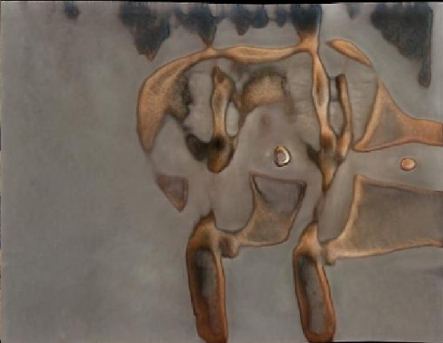

Introduction
What will I learn from this guide?
This guide will take you through the basics of how to find your dataset and then using the dataset to train the network. From this trained network we can then produce new images which theoretically look like those in the dataset provided, in my case i aimed to produce a new image of a dog.
All of the execution of code will be done on google colab which essentially gives us a free virtual environment to train the network on (so no need to worry about computing power). for more information on google colab please check out my blog post.
What is StyleGan?
StyleGan itself is a generative adversarial network (GAN) which was brought forward from Nvidia researchers in December 2018, for more information on StyleGAN2-ada please check out my blog post.
What have can be produced?
So far i have been able to produce my own 'dog' images. With further training and refining they could look much more realistic.
While i have chosen to use a dataset of dogs, you could generate new images of anything you like, so long as a related dataset exists.
How do I train my own StyleGan2-ada network?
There are 5 main steps, these are: